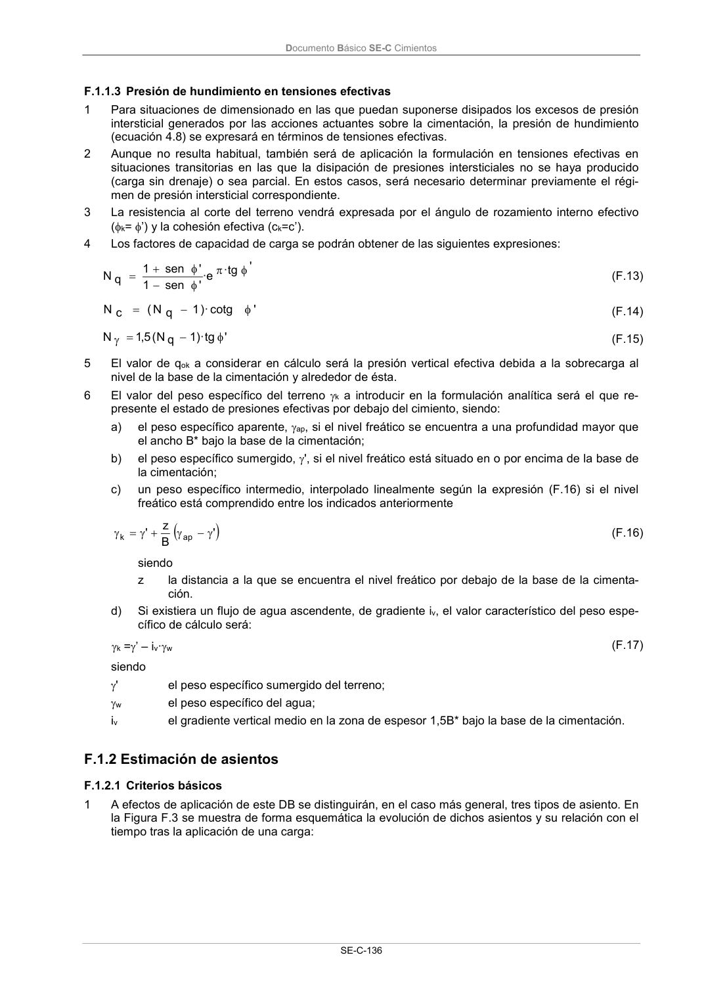
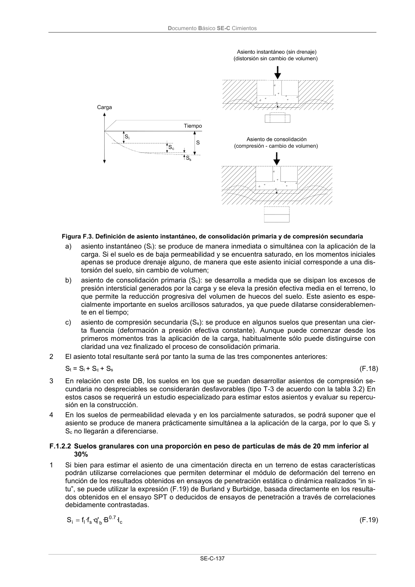
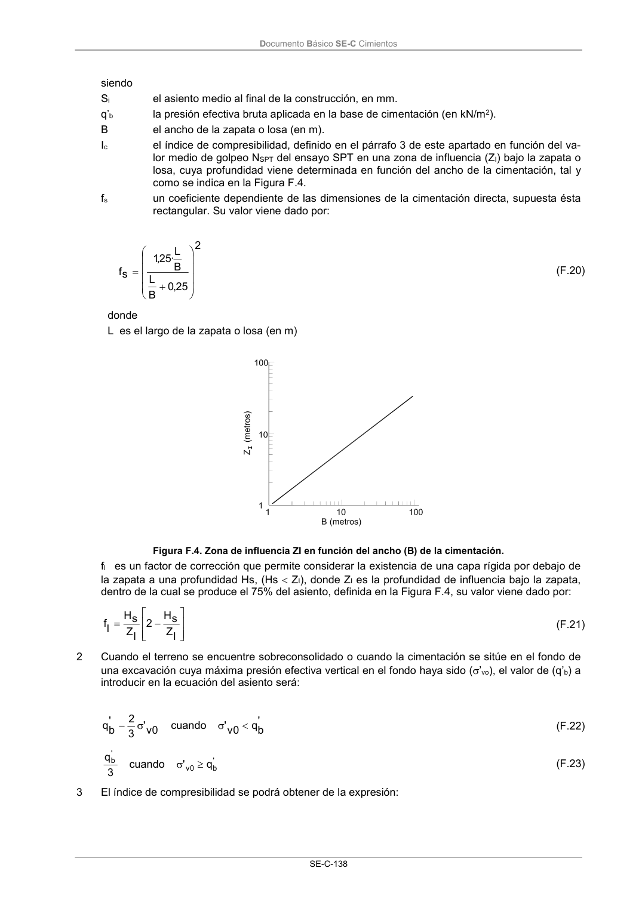
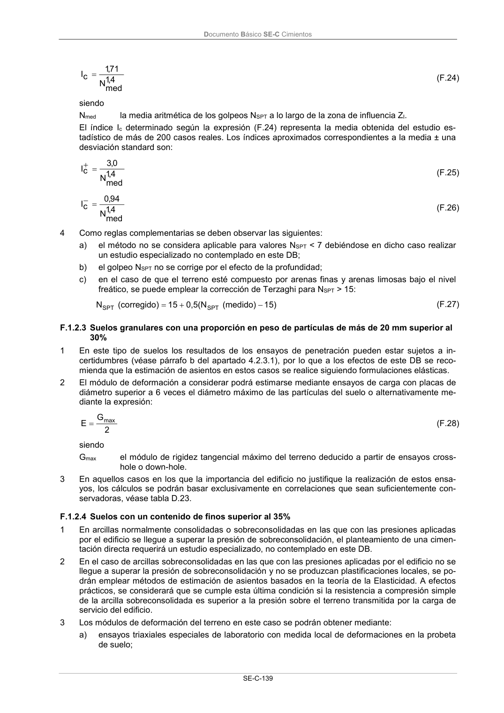
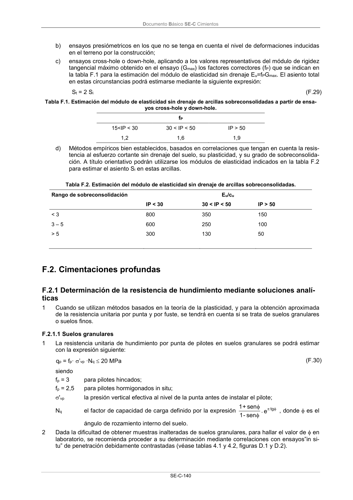

DB-SE-C · F.1.2 Estimación de asientos · versión 2019-12-20 · capa oficial
Formatos: JSON compacto · Markdown · PDF fuente
Ámbito del documento · texto del ámbito · documento y tablas
ID técnico a0253 · PDF pág. 141-145 · jerarquía no validada por persona · contrastado con el literal de la página 141 (candidato tipográfico); no validado por persona · padre: a0251
F.1.2 Estimación de asientos F.1.2.1 Criterios básicos 1 A efectos de aplicación de este DB se distinguirán, en el caso más general, tres tipos de asiento. En la Figura F.3 se muestra de forma esquemática la evolución de dichos asientos y su relación con el tiempo tras la aplicación de una carga: Documento Básico SE-C Cimientos SE-C-137 Figura F.3. Definición de asiento instantáneo, de consolidación primaria y de compresión secundaria a) asiento instantáneo (Si): se produce de manera inmediata o simultánea con la aplicación de la carga. Si el suelo es de baja permeabilidad y se encuentra saturado, en los momentos iniciales apenas se produce drenaje alguno, de manera que este asiento inicial corresponde a una dis- torsión del suelo, sin cambio de volumen; b) asiento de consolidación primaria (Sc): se desarrolla a medida que se disipan los excesos de presión intersticial generados por la carga y se eleva la presión efectiva media en el terreno, lo que permite la reducción progresiva del volumen de huecos del suelo. Este asiento es espe- cialmente importante en suelos arcillosos saturados, ya que puede dilatarse considerablemen- te en el tiempo; c) asiento de compresión secundaria (Ss): se produce en algunos suelos que presentan una cier- ta fluencia (deformación a presión efectiva constante). Aunque puede comenzar desde los primeros momentos tras la aplicación de la carga, habitualmente sólo puede distinguirse con claridad una vez finalizado el proceso de consolidación primaria. 2 El asiento total resultante será por tanto la suma de las tres componentes anteriores: St = Si + Sc + Ss (F.18) 3 En relación con este DB, los suelos en los que se puedan desarrollar asientos de compresión se- cundaria no despreciables se considerarán desfavorables (tipo T-3 de acuerdo con la tabla 3.2) En estos casos se requerirá un estudio especializado para estimar estos asientos y evaluar su repercu- sión en la construcción. 4 En los suelos de permeabilidad elevada y en los parcialmente saturados, se podrá suponer que el asiento se produce de manera prácticamente simultánea a la aplicación de la carga, por lo que Si y Sc no llegarán a diferenciarse. F.1.2.2 Suelos granulares con una proporción en peso de partículas de más de 20 mm inferior al 30% 1 Si bien para estimar el asiento de una cimentación directa en un terreno de estas características podrán utilizarse correlaciones que permiten determinar el módulo de deformación del terreno en función de los resultados obtenidos en ensayos de penetración estática o dinámica realizados “in si- tu”, se puede utilizar la expresión (F.19) de Burland y Burbidge, basada directamente en los resulta- dos obtenidos en el ensayo SPT o deducidos de ensayos de penetración a través de correlaciones debidamente contrastadas. c 7 . 0 b s l i I· B · 'q· f· f S (F.19) Documento Básico SE-C Cimientos SE-C-138 siendo Si el asiento medio al final de la construcción, en mm. q’b la presión efectiva bruta aplicada en la base de cimentación (en kN/m2). B el ancho de la zapata o losa (en m). Ic el índice de compresibilidad, definido en el párrafo 3 de este apartado en función del va- lor medio de golpeo NSPT del ensayo SPT en una zona de influencia (ZI) bajo la zapata o losa, cuya profundidad viene determinada en función del ancho de la cimentación, tal y como se indica en la Figura F.4. fs un coeficiente dependiente de las dimensiones de la cimentación directa, supuesta ésta rectangular. Su valor viene dado por: 2 25 ,0 B L B L · 25 ,1 s f (F.20) donde L es el largo de la zapata o losa (en m) Figura F.4. Zona de influencia ZI en función del ancho (B) de la cimentación. fl es un factor de corrección que permite considerar la existencia de una capa rígida por debajo de la zapata a una profundidad Hs, (Hs ZI), donde ZI es la profundidad de influencia bajo la zapata, dentro de la cual se produce el 75% del asiento, definida en la Figura F.4, su valor viene dado por: I Z s H 2 I Z s H If (F.21) 2 Cuando el terreno se encuentre sobreconsolidado o cuando la cimentación se sitúe en el fondo de una excavación cuya máxima presión efectiva vertical en el fondo haya sido (’vo), el valor de (q’b) a introducir en la ecuación del asiento será: ' b q 0 v' cuando 0 v' 3 2 ' b q (F.22) ' b 0 v ' b q ' cuando 3 q (F.23) 3 El índice de compresibilidad se podrá obtener de la expresión: Documento Básico SE-C Cimientos SE-C-139 4 ,1 med N 71 ,1 cI (F.24) siendo Nmed la media aritmética de los golpeos NSPT a lo largo de la zona de influencia ZI. El índice Ic determinado según la expresión (F.24) representa la media obtenida del estudio es- tadístico de más de 200 casos reales. Los índices aproximados correspondientes a la media ± una desviación standard son: 4 ,1 med N 0,3 cI (F.25) 4,1 med N 94 ,0 cI (F.26) 4 Como reglas complementarias se deben observar las siguientes: a) el método no se considera aplicable para valores NSPT < 7 debiéndose en dicho caso realizar un estudio especializado no contemplado en este DB; b) el golpeo NSPT no se corrige por el efecto de la profundidad; c) en el caso de que el terreno esté compuesto por arenas finas y arenas limosas bajo el nivel freático, se puede emplear la corrección de Terzaghi para NSPT > 15: 15) (medido) 0,5(N 15 ) (corregido N SPT SPT (F.27) F.1.2.3 Suelos granulares con una proporción en peso de partículas de más de 20 mm superior al 30% 1 En este tipo de suelos los resultados de los ensayos de penetración pueden estar sujetos a in- certidumbres (véase párrafo b del apartado 4.2.3.1), por lo que a los efectos de este DB se reco- mienda que la estimación de asientos en estos casos se realice siguiendo formulaciones elásticas. 2 El módulo de deformación a considerar podrá estimarse mediante ensayos de carga con placas de diámetro superior a 6 veces el diámetro máximo de las partículas del suelo o alternativamente me- diante la expresión: 2 G E max (F.28) siendo Gmax el módulo de rigidez tangencial máximo del terreno deducido a partir de ensayos cross- hole o down-hole. 3 En aquellos casos en los que la importancia del edificio no justifique la realización de estos ensa- yos, los cálculos se podrán basar exclusivamente en correlaciones que sean suficientemente con- servadoras, véase tabla D.23. F.1.2.4 Suelos con un contenido de finos superior al 35% 1 En arcillas normalmente consolidadas o sobreconsolidadas en las que con las presiones aplicadas por el edificio se llegue a superar la presión de sobreconsolidación, el planteamiento de una cimen- tación directa requerirá un estudio especializado, no contemplado en este DB. 2 En el caso de arcillas sobreconsolidadas en las que con las presiones aplicadas por el edificio no se llegue a superar la presión de sobreconsolidación y no se produzcan plastificaciones locales, se po- drán emplear métodos de estimación de asientos basados en la teoría de la Elasticidad. A efectos prácticos, se considerará que se cumple esta última condición si la resistencia a compresión simple de la arcilla sobreconsolidada es superior a la presión sobre el terreno transmitida por la carga de servicio del edificio. 3 Los módulos de deformación del terreno en este caso se podrán obtener mediante: a) ensayos triaxiales especiales de laboratorio con medida local de deformaciones en la probeta de suelo; Documento Básico SE-C Cimientos SE-C-140 b) ensayos presiómetricos en los que no se tenga en cuenta el nivel de deformaciones inducidas en el terreno por la construcción; c) ensayos cross-hole o down-hole, aplicando a los valores representativos del módulo de rigidez tangencial máximo obtenido en el ensayo (Gmax) los factores correctores (fP) que se indican en la tabla F.1 para la estimación del módulo de elasticidad sin drenaje Eu=fPGmax. El asiento total en estas circunstancias podrá estimarse mediante la siguiente expresión: St = 2 Si (F.29) Tabla F.1. Estimación del módulo de elasticidad sin drenaje de arcillas sobreconsolidadas a partir de ensa- yos cross-hole y down-hole. fP 15<IP < 30 30 < IP < 50 IP > 50 1,2 1,6 1,9 d) Métodos empíricos bien establecidos, basados en correlaciones que tengan en cuenta la resis- tencia al esfuerzo cortante sin drenaje del suelo, su plasticidad, y su grado de sobreconsolida- ción. A título orientativo podrán utilizarse los módulos de elasticidad indicados en la tabla F.2 para estimar el asiento Si en estas arcillas. Tabla F.2. Estimación del módulo de elasticidad sin drenaje de arcillas sobreconsolidadas. Rango de sobreconsolidación Eu/cu IP < 30
1 referencias con forma DB se han ocultado por no cumplir la sintaxis oficial; la lista original sigue en el JSON.





PDF fuente redistribuible: copia fiel enlazada en esta página (SHA256 verificado).